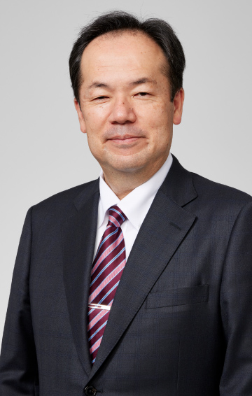

8.23（水）11：30～12：00
変化の時代を勝ち抜く人的資本経営とは
日鉄ソリューションズ代表取締役社長
玉置 和彦 氏
ビジネスにおけるデジタルの役割が急速に拡大するとともに、AIをはじめビジネス転換となりうる技術革新が次々と生まれる現在は、まさしく「変化の時代」といえます。今回は、技術革新がリードするビジネスの変化に対応し、勝ち抜く組織となるための人的資本投資のあり方をNSSOLの実践例を交えて紹介します。